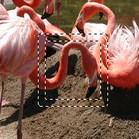

Border Selection
Overview
Border select modifies an exisiting selection. The resulting selection will rendered as a border built from the exisiting one.
Border Selection Options
The width of the new selection can be set to a number of units. The inside width of the new selection will be half of the value set here and the outside width of the new selection will be the other half.

The image on the left shows the orginal rectangular selection. The image on the right shows a border selection of ten pixels.
 | Selections created using Border selection are feathered . |